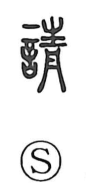

請

Kun: kou, ukeru, ukeou | On: sei, shin, shou
to request ・ to ask ・ to petition ・ to undertake ・ to receive (a job)
Explanation
請 is a phono-semantic character built with the speech element 言 and the phonetic 青, which signals the on reading sei. Early glosses describe it as seeking an audience before a superior, and in the Han era the regulation called Spring Audience and Autumn Petition prescribed set times to visit the Son of Heaven. From this formal act of asking to be received, the character broadened to mean to request, to ask or seek, and to petition. In Japanese it also extends to the practical sense of taking something on, as in accepting a job or contract, seen in expressions like ukeou and shitauke.